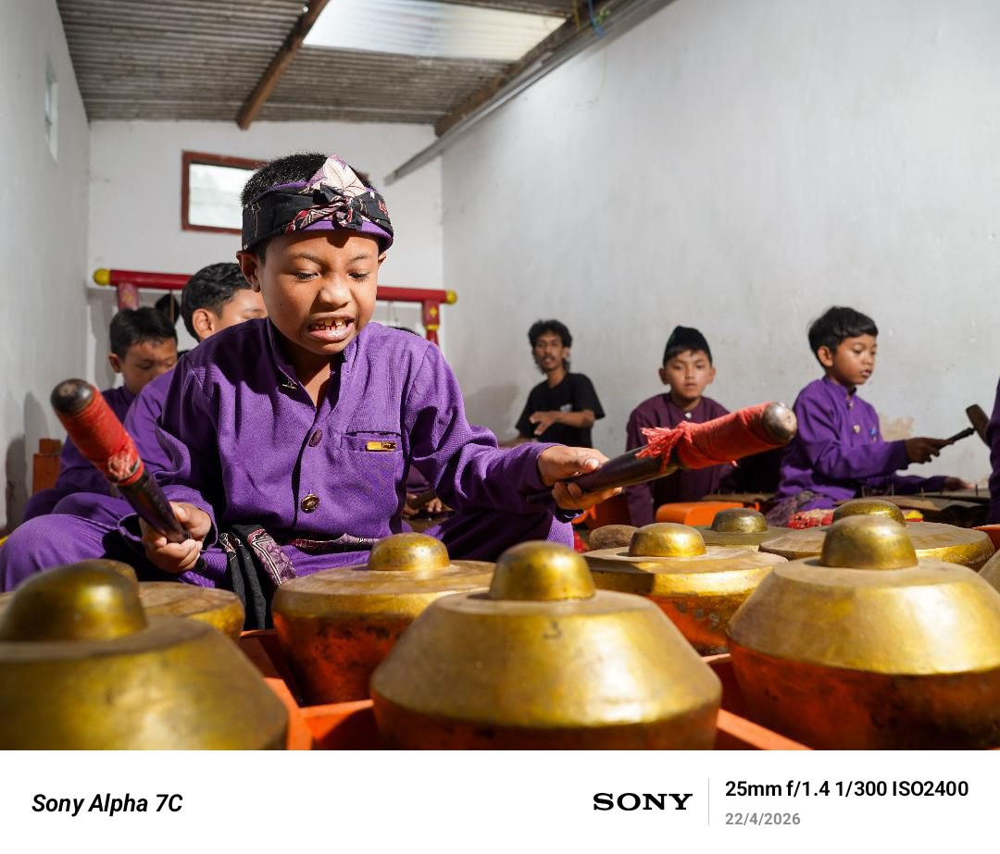
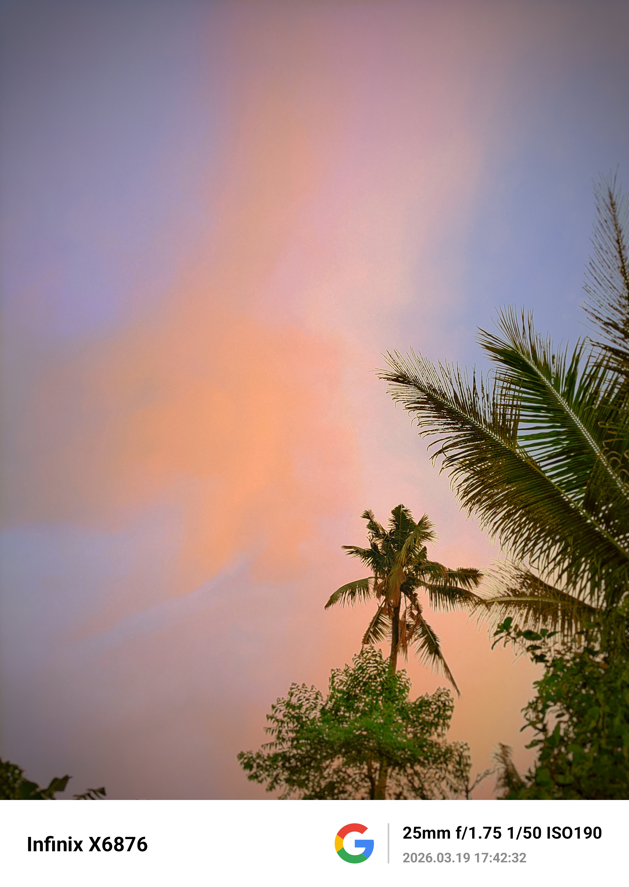
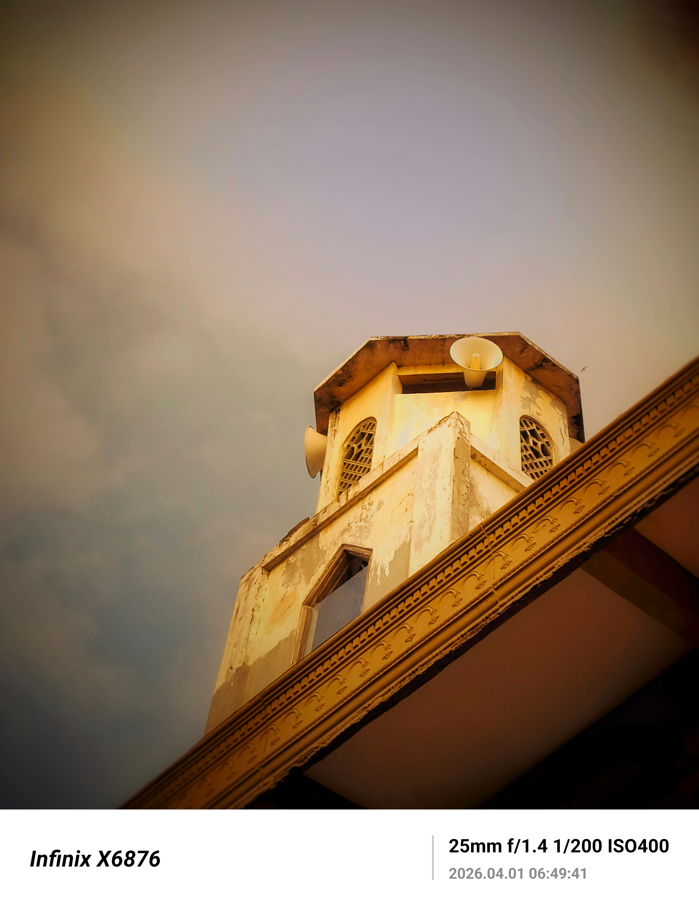
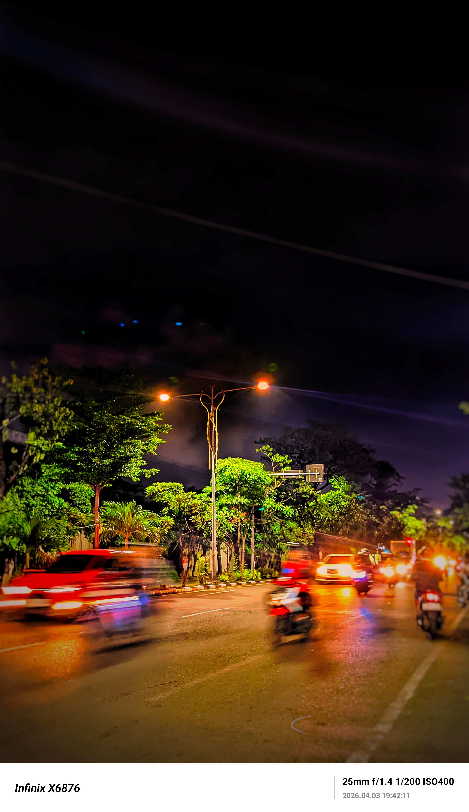
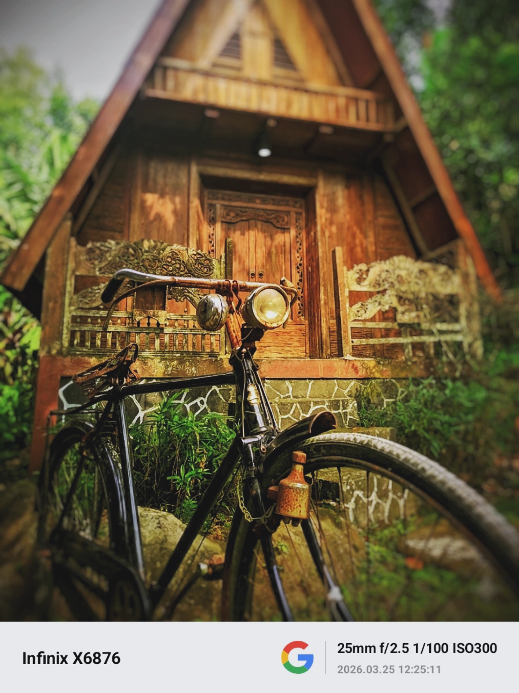

Di hadapannya, kita menyadari bahwa tidak semua yang diam itu kosong. Ada diam yang penuh sejarah, penuh pengorbanan, penuh harapan yang membatu menjadi kenangan. Barangkali, pada akhirnya, manusia dan patung hanya dibedakan oleh satu hal: manusia hidup untuk mencari makna, sedangkan patung tetap berdiri untuk mengingatkan makna itu kepada generasi yang datang berikutnya. #ceritalensa #fotografer #rasadankarsa
Infinix X6876 | f/1.75 | 1/80s | ISO 350

Ada warisan yang tak dapat disimpan di dalam museum, karena ia hanya hidup ketika dimainkan. Pada jemari anak-anak inilah kebudayaan menemukan rumahnya kembali. Di setiap denting gamelan, masa lalu tidak sedang dikenang—ia sedang dilanjutkan. Sebab budaya bukan tentang menjaga abu, melainkan merawat api agar terus menyala dari satu generasi ke generasi berikutnya. #cahayafoto #karawitan #rasadanmakna #fotografi
Infinix X6876 | f/1.4 | 1/300s | ISO 2400

Senja tak pernah meminta langit untuk tinggal lebih lama. Ia hanya datang, melukis cakrawala dengan warna-warna yang lembut, lalu menghilang tanpa mengajarkan cara untuk menggenggamnya. Mungkin, keindahan memang diciptakan bukan untuk dimiliki, melainkan untuk dikenang. #naturephoto #photography #alam
Infinix x6876 | f/1.75 | 1/500s | ISO 190

Seberapa indah waktu itu? atau malah seberapa buruk waktu itu?, namun kenyataan selalu berkata bahwa segala sesuatunya akan kembali seperti semula, waktu yang bahagia akan berakhir, waktu yang sedih juga akan berakhir. Lantas apa hak kita atas kendalinya, selain memanfaatkanya sebagaimana kita bisa?. #fotografi #cahayafoto #capturemoments
Infinix X6876 | f/1.4 | 1/200s | ISO 400

Dunia selalu sibuk, bahkan disaat nada dan tawa terlukis indah, di balik bising yang menderu, ada rindu yang dipaksa membatu. Kita hanyalah angka-angka yang berlari di atas aspal panas, mengejar detik yang tak pernah mau menunggu, sembari sesekali mencuri pandang pada sepasang mata yang menenangkan—namun tangan enggan menggenggam karena takut tujuan menjadi buram. #fotografi #cahaya #nightlights
Infinix X6876 | f/1.4 | 1/200s | ISO 400

Berapa hari? Berapa bulan? Atau mungkin berapa tahun? Hingga suatu saat semuanya purna. Mungkin warnanya tak lagi sama, mungkin terangnya juga telah meredup dan bahkan mungkin ia tak sanggup lagi bergerak. Maka lekaslah hidup sebelum semuanya terlambat. #kuno #fotografi #menyaparasa
Infinix x6876 | f/2.5 | 1/100s | ISO 300

Di balik setiap ukiran, ada tangan yang berkarya. Di balik setiap simbol, ada leluhur yang bercerita. Dan di balik setiap jepretan kamera, ada harapan agar warisan ini tetap hidup, bukan hanya dalam foto, tetapi juga di hati setiap generasi. waktu telah ia lewati, sepanjang suasana dan warna warni kehidupan, konon katanya, manusia akan tau sesuatu itu amat berharga setelah ia melewatinya, dan hanya akan ada 2 pilihan, bersyukur atau menyesal. #topengbudaya #heritage #fotografi
Infinix x6876 | f/1.75 | 1/4484s | ISO 45

Di antara pepohonan yang menjulang dan angin yang berbisik, jalan setapak ini mengajarkan bahwa hidup bukan tentang seberapa cepat kita tiba, melainkan seberapa dalam kita mampu menikmati setiap langkah. Sebab alam tak pernah terburu-buru, namun selalu berhasil mencapai musimnya. #langkahalam #jalandanwaktu #fotografi
Infinix x6876 | f/1.75 | 1/100s | ISO 500